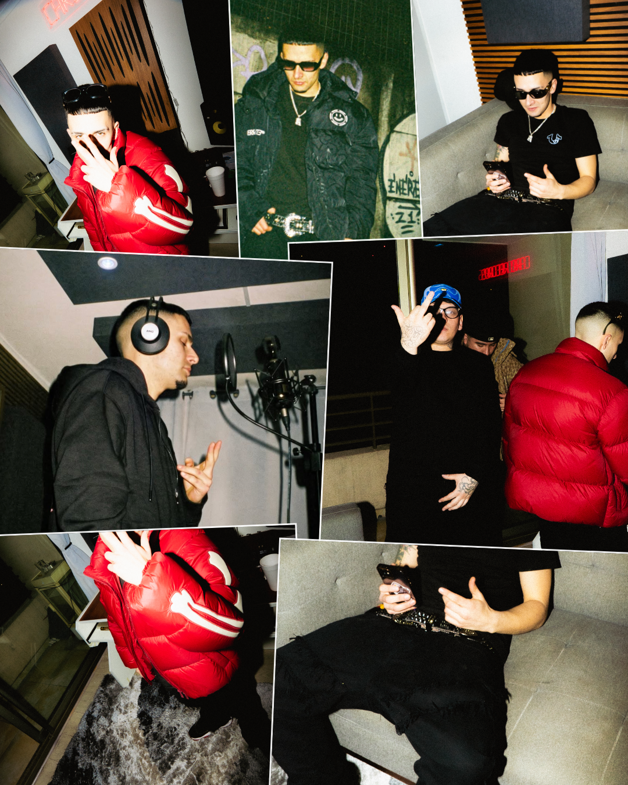

<!doctype html>
<html lang="es">
<head>
<meta charset="utf-8">
<title>Blink Radar TANE</title>
<style>
  :root{
    --negro:  #0A0A0A;
    --morado: #7B2CFF;
    --blanco: #FFFFFF;
  }
  *{ margin:0; padding:0; box-sizing:border-box; }
  html,body{ background:var(--negro); }

  .lamina{
    position:relative;
    width:1080px; height:1350px;
    background:var(--negro);
    overflow:hidden;
    font-family:"Montserrat", sans-serif;
  }

  /* ---------------------------------------------------------------- FONDO
     El mismo collage en las nueve láminas, teñido de morado: la foto en gris
     pone la luminancia y el morado el color. El tinte va al 68% para que la
     foto no se coma al radar ni se vuelva una mancha plana. */
  .fondo{ position:absolute; inset:0; z-index:0; }
  .fondo img{
    position:absolute; inset:0; width:1080px; height:1350px;
    filter:grayscale(1) contrast(1.24) brightness(.66);
  }
  .fondo .tinte{
    position:absolute; inset:0; background:var(--morado);
    mix-blend-mode:color; opacity:.68;
  }
  .fondo .velo{
    position:absolute; inset:0;
    background:linear-gradient(180deg,
      rgba(10,10,10,.88) 0%,  rgba(10,10,10,.30) 15%,
      rgba(10,10,10,.14) 36%, rgba(10,10,10,.52) 56%,
      rgba(10,10,10,.76) 74%, rgba(10,10,10,.82) 100%);
  }
  .lamina.interior .fondo img{ filter:grayscale(1) contrast(1.18) brightness(.54); }
  .lamina.interior .fondo .velo{ background:rgba(10,10,10,.60); }

  /* ------------------------------------------------ el círculo de radar */
  .radar{ position:absolute; inset:0; z-index:1; }

  /* --------------------------------------------------------- el logo */
  .logo{ position:absolute; top:40px; right:64px; width:208px; z-index:5; }

  /* --------------------------------------- la cabecera de la portada */
  .cabecera{ position:absolute; top:92px; left:72px; z-index:5; }
  .cabecera .fila{ display:flex; align-items:center; gap:22px; }
  .cabecera .destello{ width:38px; height:38px; }
  .cabecera .rotulo{
    font-weight:800; font-size:31px; letter-spacing:5px;
    color:var(--morado); text-transform:uppercase;
  }
  .cabecera .edicion{
    margin-top:14px; margin-left:60px;
    font-weight:600; font-size:27px; letter-spacing:3.4px;
    color:rgba(255,255,255,.88); text-transform:uppercase;
  }

  /* ------------------------------------------- el centro de la portada */
  .centro{ position:absolute; z-index:5; left:72px; right:72px; bottom:252px; text-align:center; }
  .centro .genero{
    font-weight:800; font-size:27px; letter-spacing:8px;
    color:var(--morado); text-transform:uppercase; margin-bottom:20px;
  }
  .centro .nombre{
    font-family:"Anton", sans-serif;
    font-size:142px; line-height:1.0; color:var(--blanco);
    letter-spacing:1px; text-transform:uppercase;
  }
  .centro .nombre em{ font-style:normal; display:block; margin-top:14px; }
  .centro .bajada{
    margin:30px auto 0; max-width:910px;
    font-weight:500; font-size:31px; line-height:1.42;
    color:rgba(255,255,255,.95); text-wrap:balance;
  }

  /* --------------------------------------------------------------- el pie */
  .pie{
    position:absolute; z-index:5; left:0; right:0; bottom:84px;
    border-top:1.5px solid rgba(255,255,255,.20); padding-top:46px;
    display:flex; align-items:center; justify-content:center; gap:20px;
  }
  .pie span{
    font-weight:800; font-size:26px; letter-spacing:3.4px;
    color:var(--blanco); text-transform:uppercase;
  }
  .pie svg{ width:42px; height:26px; }

  /* ------------------------------------- el cuerpo de las interiores */
  .cuerpo{
    position:absolute; z-index:5; left:72px; right:72px; top:0; bottom:0;
    display:flex; flex-direction:column; justify-content:center; gap:32px;
  }
  .titular{
    font-family:"Anton", sans-serif; font-size:92px; line-height:1.02;
    letter-spacing:.5px; text-transform:uppercase;
  }
  .titular .uno{ color:var(--blanco); display:block; }
  .titular .dos{ color:var(--morado); display:block; margin-top:12px; }

  .texto{ font-weight:600; font-size:33px; line-height:1.42; color:rgba(255,255,255,.96); }
  .texto strong{ font-weight:800; }

  /* el bloque destacado, con la barra morada y el destello */
  .destacado{
    display:flex; align-items:flex-start; gap:22px;
    border-left:4px solid var(--morado); padding-left:26px;
  }
  .destacado .destello{ width:30px; height:30px; flex:none; margin-top:6px; }
  .destacado p{ font-weight:700; font-size:32px; line-height:1.38; color:rgba(255,255,255,.96); }

  /* --------------------------- las fotos que salen del fondo --------- */
  /* Una foto ladeada al lado del texto, como una copia pegada encima. */
  .conFoto{ display:flex; align-items:flex-start; gap:34px; }
  .conFoto .texto{ flex:1; }
  .conFoto .carta{
    flex:none; width:276px; height:360px; overflow:hidden;
    border:5px solid rgba(255,255,255,.94); border-radius:3px;
    transform:rotate(3.2deg);
  }
  .conFoto .carta img{ width:100%; height:100%; object-fit:cover; object-position:50% 24%; }

  /* La tira de VHS: la cinta con sus perforaciones y cuatro ventanas. */
  .cinta{
    transform:rotate(-1.6deg);
    background:rgba(10,10,10,.82);
    border:1.5px solid rgba(255,255,255,.26);
    border-radius:12px;
    padding:16px;
  }
  .cinta .dientes{
    height:16px;
    background:repeating-linear-gradient(90deg,
      rgba(255,255,255,.34) 0 16px, transparent 16px 40px);
    border-radius:3px;
  }
  .cinta .ventanas{ display:flex; gap:12px; margin:14px 0; }
  .cinta .ventanas div{ flex:1; height:188px; overflow:hidden; border-radius:4px; }
  .cinta .ventanas img{ width:100%; height:100%; object-fit:cover; filter:saturate(.5); }
  .cinta .nombre{
    margin-top:4px; text-align:center;
    font-weight:800; font-size:19px; letter-spacing:4px;
    color:rgba(255,255,255,.70); text-transform:uppercase;
  }

  /* las cifras, en cajas */
  .cifras{ display:flex; gap:28px; }
  .cifras .caja{
    flex:1; text-align:center;
    border:1.5px solid rgba(255,255,255,.24); border-radius:20px;
    background:rgba(10,10,10,.46); padding:28px 16px 24px;
  }
  .cifras .numero{ font-family:"Anton", sans-serif; font-size:94px; line-height:.94; color:var(--blanco); }
  .cifras .caja.morada .numero{ color:var(--morado); }
  .cifras .que{
    margin-top:12px; font-weight:800; font-size:20px; letter-spacing:2px;
    color:rgba(255,255,255,.82); text-transform:uppercase;
  }

  /* la portada del disco */
  .disco{ display:flex; flex-direction:column; align-items:center; gap:34px; }
  .disco img{
    width:600px; height:600px; border-radius:22px; display:block;
    border:1.5px solid rgba(255,255,255,.20);
  }
  .disco p{
    font-weight:600; font-size:30px; line-height:1.38;
    color:rgba(255,255,255,.94); text-align:center; text-wrap:balance;
  }

  /* el cierre */
  .cierre{
    position:absolute; z-index:5; inset:0;
    display:flex; flex-direction:column; align-items:center; justify-content:center; gap:40px;
  }
  .cierre .remate{
    font-family:"Anton", sans-serif; font-size:132px; line-height:1.02;
    color:var(--blanco); text-align:center; text-transform:uppercase;
  }
  .cierre .remate em{ color:var(--morado); font-style:normal; display:block; margin-top:34px; }
  .cierre .cuenta{
    border:1.5px solid rgba(255,255,255,.34); border-radius:999px; padding:16px 38px;
    font-weight:800; font-size:30px; letter-spacing:2.6px; color:var(--blanco);
  }
  .cierre .lema{
    font-weight:600; font-size:27px; letter-spacing:3px;
    color:rgba(255,255,255,.70); text-transform:uppercase;
  }
</style>
</head>
<body>
<div class="lamina" id="lamina"></div>

<script>
const DESTELLO =
  '<svg class="destello" viewBox="0 0 24 24" fill="#7B2CFF">' +
  '<path d="M 12 0.94 L 12.57 10.61 L 13.99 10.01 L 13.39 11.43 L 23.06 12 ' +
  'L 13.39 12.57 L 13.99 13.99 L 12.57 13.39 L 12 23.06 L 11.43 13.39 ' +
  'L 10.01 13.99 L 10.61 12.57 L 0.94 12 L 10.61 11.43 L 10.01 10.01 ' +
  'L 11.43 10.61 Z"/></svg>';

const FLECHA =
  '<svg viewBox="0 0 42 26" fill="none" stroke="#7B2CFF" stroke-width="3.4" ' +
  'stroke-linecap="round" stroke-linejoin="round">' +
  '<path d="M2 13 H38 M28 4 L38 13 L28 22"/></svg>';

// Los anillos: el mismo dibujo en todas, para que el carrusel se lea como una
// sola pieza. Van bien marcados, que es lo que le da el nombre al formato.
function radar(){
  const radios = [152, 298, 452, 612, 782, 962, 1150];
  const anillos = radios.map((r, i) =>
    '<circle cx="540" cy="700" r="' + r + '" stroke="#7B2CFF" stroke-width="2.6" ' +
    'opacity="' + (0.72 - i * 0.065).toFixed(3) + '" fill="none"/>').join("");
  return '<svg class="radar" viewBox="0 0 1080 1350">' + anillos + '</svg>';
}

function fondo(){
  return '<div class="fondo">' +
    '<div class="tinte"></div><div class="velo"></div></div>';
}

function titular(a, b){
  return '<div class="titular"><span class="uno">' + a + '</span>' +
         '<span class="dos">' + b + '</span></div>';
}

function cinta(fotos, nombre){
  return '<div class="cinta"><div class="dientes"></div><div class="ventanas">' +
    fotos.map(f => '<div></div>').join("") +
    '</div><div class="dientes"></div>' +
    (nombre ? '<div class="nombre">' + nombre + '</div>' : '') + '</div>';
}

const LAMINAS = {

  1: { portada:true, html:
    '<div class="cabecera">' +
      '<div class="fila">' + DESTELLO + '<div class="rotulo">Blink Radar</div></div>' +
      '<div class="edicion">Edición octubre 2026</div>' +
    '</div>' +
    '<div class="centro">' +
      '<div class="genero">Trap chileno</div>' +
      '<div class="nombre">TANE está<em>de estreno</em></div>' +
      '<div class="bajada">“LOST TAPE” incluye las diez canciones que quedaron fuera ' +
        'de su próximo disco, y que decidió no perder</div>' +
    '</div>' +
    '<div class="pie"><span>Desliza para conocerlo</span>' + FLECHA + '</div>' },

  2: { html:
    '<div class="cuerpo">' +
      titular("Más de diez años", "en el trap chileno") +
      '<div class="conFoto">' +
        '<p class="texto">TANE es Tomás Gutiérrez, de Santiago, y lleva más de diez ' +
        'años haciendo trap: ya estaba dando vueltas cuando la escena chilena recién ' +
        'se armaba.</p>' +
        '<div class="carta"></div>' +
      '</div>' +
      '<p class="texto">Hoy tiene su propio estudio, CARO RÉCORDS, y quiere subir de ' +
      'nivel, pero con la intención de conectar con más gente.</p>' +
    '</div>' },

  3: { html:
    '<div class="cuerpo">' +
      titular("CARO no es un disco,", "es su serie entera") +
      '<p class="texto">CARO es la serie numerada con la que TANE viene ordenando todo ' +
      'lo que publica, y lleva el mismo nombre que su estudio. El primer volumen salió ' +
      'en diciembre de 2023 con seis canciones, y del segundo él dijo que iba a tener ' +
      '“una propuesta un poco más seria”.</p>' +
      '<div class="destacado">' + DESTELLO +
        '<p>Que la serie siga también es decisión suya: “Caro 2, 3, 4, 5, todos los ' +
        'que saquemos”</p>' +
      '</div>' +
    '</div>' },

  4: { html:
    '<div class="cuerpo">' +
      titular("LOST TAPE salió", "armando el VOL. 2") +
      '<p class="texto">CARO VOL. 2 es el disco que TANE está preparando ahora y que ' +
      'todavía no sale. Mientras lo armaba grabó muchas más canciones de las que cabían, ' +
      'y diez quedaron fuera. En vez de dejarlas guardadas las reunió en una cinta ' +
      'aparte, presentada en formato VHS.</p>' +
      cinta(["TANE 1.png", "TANE 7.JPEG", "TANE 9.JPEG", "TANE 8.JPEG"],
            "Lost Tape · Road to Caro Vol.2") +
    '</div>' },

  5: { html:
    '<div class="cuerpo">' +
      '<div class="disco">' +
        '<p>Así se ve “LOST TAPE (ROAD TO CARO VOL.2)”, que salió el jueves 8 de octubre</p>' +
      '</div>' +
      '<div class="cifras">' +
        '<div class="caja"><div class="numero">10</div>' +
          '<div class="que">canciones en LOST TAPE</div></div>' +
        '<div class="caja morada"><div class="numero">6</div>' +
          '<div class="que">canciones en CARO VOL. 1</div></div>' +
      '</div>' +
    '</div>' },

  6: { html:
    '<div class="cuerpo">' +
      titular("Por qué no las", "dejó guardadas") +
      '<p class="texto">Él lo explicó así cuando salió el disco:</p>' +
      '<div class="destacado">' + DESTELLO +
        '<p>“La idea de hacer este LOST TAPE fue armando mi próximo disco. Hice muchos ' +
        'temas y creo que estos diez temas, aunque no estén dentro de CARO VOL. 2, ' +
        'no se podían perder”</p>' +
      '</div>' +
    '</div>' },

  7: { html:
    '<div class="cuerpo">' +
      titular("No son invitados", "sueltos") +
      '<p class="texto">En LOST TAPE cantan Baby Jey, Jamez Manuel, Kuroh, ALBLACK, ' +
      'Poison Kid, Pablo Diablo y el mexicano Sleezy O. Cinco de ellos ya habían estado ' +
      'en CARO VOL. 1.</p>' +
      '<p class="texto">Buena parte del disco se grabó en La Sede, la casa-estudio que ' +
      'se armó en pandemia y donde TANE vivió con varios de ellos. La producción la ' +
      'firma él mismo junto a Loose, Killua97 y Discan.</p>' +
    '</div>' },

  8: { html:"" },

  9: { html:
    '<div class="cierre">' +
      '<div class="remate">Síguenos<em>para más</em></div>' +
      '<div class="cuenta">@blinkmediacl</div>' +
      '<div class="lema">Parpadeas y te lo pierdes</div>' +
    '</div>' }
};

const N = parseInt(new URLSearchParams(location.search).get("n") || "1", 10);
const L = LAMINAS[N];
const caja = document.getElementById("lamina");
if (!L.portada) caja.classList.add("interior");
caja.innerHTML = fondo() + radar() +
  '' + L.html;

(async function(){
  await document.fonts.load("142px Anton");
  await document.fonts.load("600 33px Montserrat");
  await document.fonts.ready;

  // Los titulares se achican solos si una línea no cabe a lo ancho.
  const achicar = (el, base, minimo, ancho) => {
    let t = base;
    while (t > minimo && el.scrollWidth > ancho){ t -= 1; el.style.fontSize = t + "px"; }
  };
  const n = caja.querySelector(".centro .nombre");
  if (n) n.querySelectorAll("em, :scope").forEach(() => {});
  if (n) achicar(n, 142, 72, 936);
  caja.querySelectorAll(".titular span").forEach(s => achicar(s, 92, 50, 936));

  document.title = "listo";
})();
</script>
</body>
</html>
